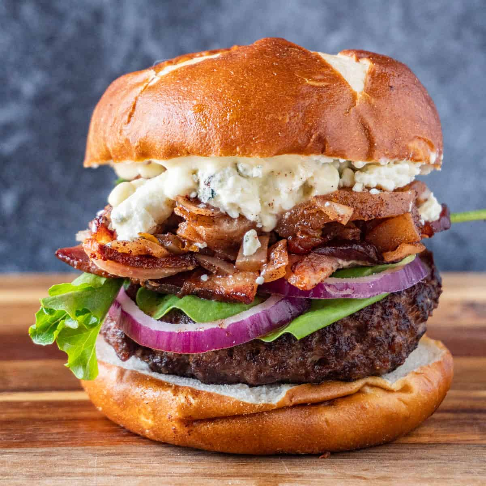

Zesty Burger with Bacon and Blue Cheese

Recipe:
Indulge in a savory burger featuring crispy bacon and bold blue cheese. Sink your teeth into juicy beef, topped with melted blue cheese and smoky bacon, nestled in a soft bun. The combination of flavors and textures is sure to leave your taste buds satisfied and craving more!
Ingredients
- onions (optional)
- lettuce (optional)
- tomato (optional)
- condiments (optional)
- bacon
- blue cheese
- ground beef
- burger buns
- salt
- pepper
- butter
directions
- Preheat a grill or skillet over medium-high heat.
- Divide the ground beef into 4 equal portions and shape each portion into a patty that is slightly wider than the bun.
- Season both sides of each patty generously with salt and pepper.
- Place the patties onto the grill or skillet and cook for 4-5 minutes per side for medium-rare, or until cooked to your desired level of doneness.
- While the patties are cooking, fry the bacon and sautee onions in separate pans until crispy.
- When the patties are nearly done, top each patty with a generous amount of blue cheese crumbles and allow the cheese to melt for 1-2 minutes.
- Toast the buns on the grill or in the oven until lightly golden brown.
- To assemble the burger, place a patty with melted blue cheese onto the bottom bun. Add 2 slices of bacon on top of the cheese. Add any optional toppings, such as lettuce, tomato, and onion slices. Spread optional condiments onto the top bun, and place the top bun onto the burger.
- Serve hot and enjoy!